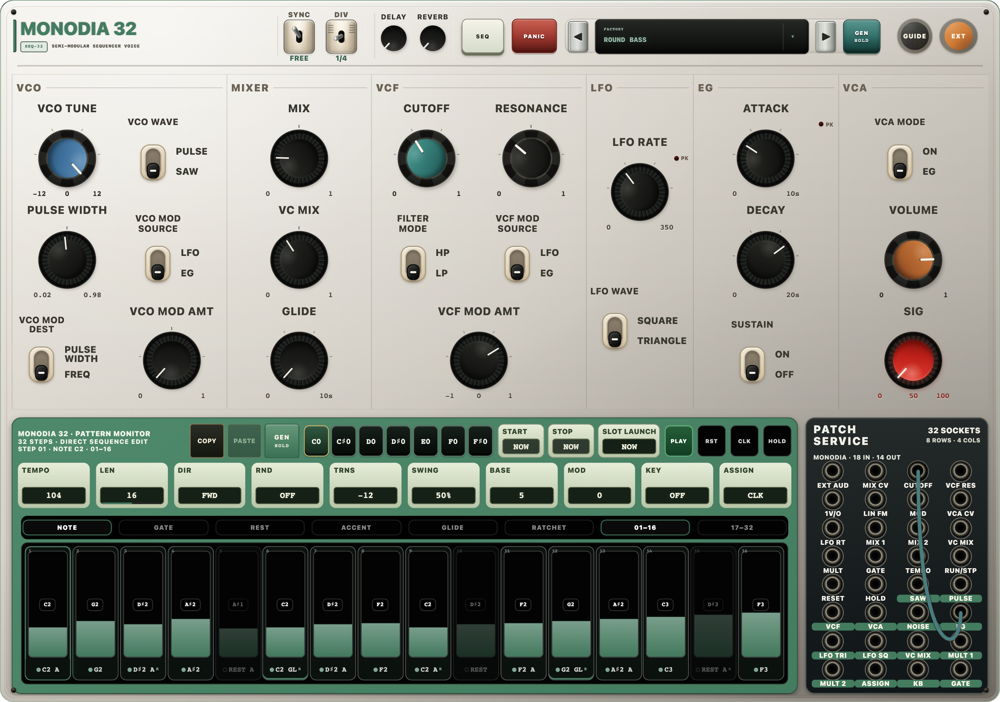
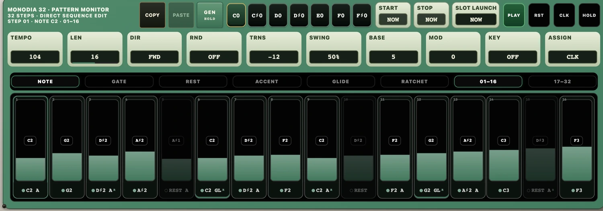
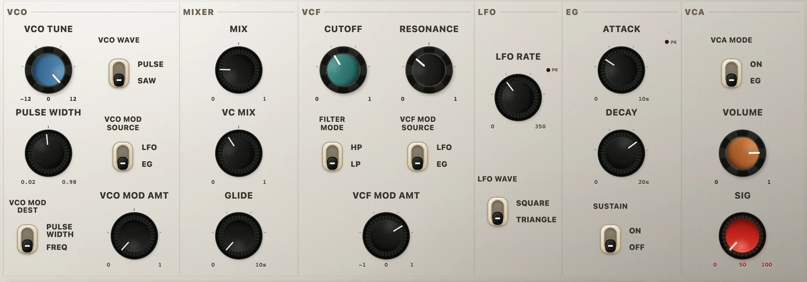
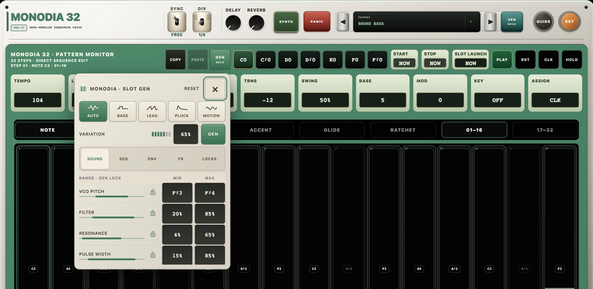
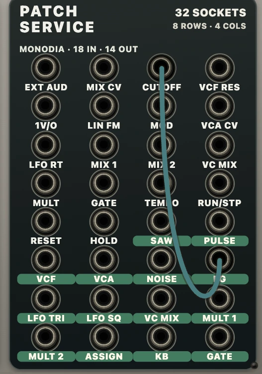
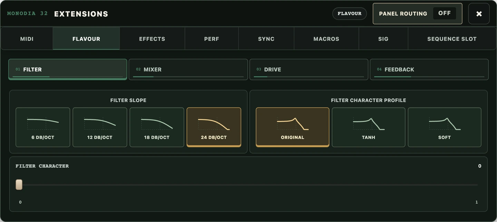
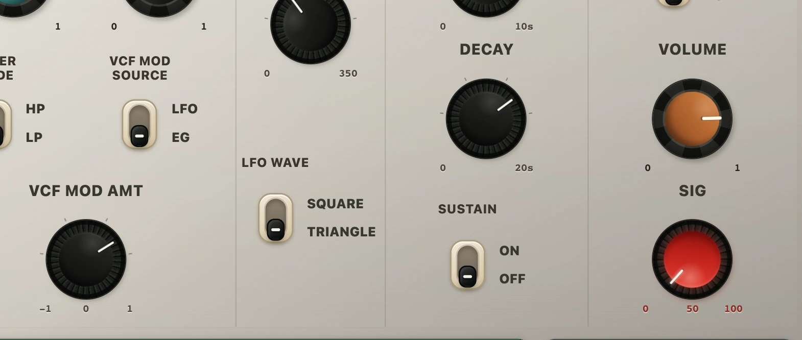

Semi-modular sequencer synth · Manual
MONODIA 32
Shape a monophonic voice, sequence it across 32 steps and send performance data to other modules.


Play your first sequence
Load a Factory sound, then use the sequencer to hear how one edit changes the phrase.


- Load a Factory sound
Open the black preset display and choose a Factory sound.
- Start a sequence
Open SEQ and press PLAY. Use the 01–16 bank and select NOTE.
- Edit a step
Drag a step vertically to change its pitch. Select REST to leave a gap, then adjust CUTOFF on the main panel.
Shape the voice
Follow the signal path from the oscillator and mixer through the filter and amplifier.


Sound and modulation
Build the voice, one relationship at a time.
The main panel follows a conventional semi-modular subtractive signal path.
Choose VCO WAVE and set PULSE WIDTH when using the pulse waveform.
Use MIX to balance oscillator material against the normalled noise/external-audio path.
Set FILTER MODE, CUTOFF and RESONANCE.
Use VCO MOD SOURCE, DESTINATION and AMOUNT for oscillator modulation.
Set LFO RATE/WAVE, ATTACK, DECAY and VCF MOD AMOUNT; choose SUSTAIN MODE and VCA MODE for articulation.
Edit the 32 steps
Switch banks and edit notes, gates, rests, accents, glides and ratchets directly on the steps.
Playing and patterns
Explore the instrument’s own performance controls.
Each of the 32 steps owns NOTE, GATE, REST, ACCENT, GLIDE and RATCHET data.
Open SEQ and use 01–16 / 17–32 to select a bank of sixteen large steps.
Choose NOTE, GATE, REST, ACCENT, GLIDE or RATCHET to decide what each step meter edits.
Drag vertically inside a step to change its value; continue horizontally or diagonally to edit several steps.
A short tap performs the lane-appropriate direct action, such as rest/accent/glide toggling.
Use BPM, LENGTH, DIRECTION, RANDOM, TRANSPOSE, SWING, KB ENTRY and ASSIGN in the same sequence workspace.
Choose a clock source
Set the internal timing or follow external pulses, step-address CV or MIDI clock.
TEMPO, ANALOG CLOCK AND MIDI CLOCK
MONODIA 32 can run from its internal clock, single external advance pulses, analogue PPQN clock, step-address CV or MIDI realtime clock.
For internal timing, set BPM and SWING in SEQ.
In EXT choose TEMPO INPUT MODE: CV, SINGLE CLOCK / ADVANCE, ANALOG CLOCK or STEP ADDRESS CV.
For ANALOG CLOCK choose INPUT PPQN from 1–14, 24 or 48 pulses per quarter. The follower locks after receiving timing information and continues generating musical step timing between pulses.
Enable FOLLOW MIDI CLOCK when MIDI realtime clock should be authoritative; FOLLOW MIDI START/STOP separately controls transport following.
Use MIDI CLOCK DIVISION and OUTPUT PPQN for received-clock division and exported clock density.
Recall slots and patterns
Use seven full-state live slots for performance. Use the 64 Pattern Locations to store sequences independently of the voice.


SEQUENCE SLOTS S1–S7 — COMPLETE STATE + TOUCH WRITE
The seven Sequence Slots are complete, independent live memories. They are separate from the 64 Pattern Locations: each slot automatically saves the current sequence together with synthesis, patching, macros and performance settings.
Choose a C0–F♯0 slot button to recall its stored state. SLOT LAUNCH sets immediate or quantized recall; the current sequence continues until the chosen boundary.
Edit the sequence and synth parameters freely: the active slot saves them automatically, without a separate STORE command.
COPY captures the active slot and sound. Select the destination, wait for recall, then PASTE. Only that destination is replaced; choose it deliberately before pasting.
If you are still dragging a knob or slider when you change slots, TOUCH WRITE keeps the value under your finger and immediately writes it into the new slot. Further movements keep writing there until release.
Complete-state recall uses a short audio dezipper around the commit to avoid abrupt discontinuities without stopping the clock, sequencer or MIDI. The seven slots can also be recalled through MIDI keyswitches.
64 PATTERN LOCATIONS
Sequence memory is separate from the timbral preset bank and stores complete 32-step pattern data.
MANUAL SAVE lets you edit freely and write only when you explicitly store the location.
AUTO SAVE writes edits to the current location automatically.
WRITE PROTECT keeps edits audible in the running session but blocks memory writes.
MIDI Program Change 1–64 recalls the 64 pattern locations.
DELAY PATTERN CHANGE can defer recall to the next cycle boundary; LOAD SAVED TIMING controls whether stored timing values are restored too.
Patch the voice and ASSIGN output
Route audio, gate and CV through the patchbay. Choose what ASSIGN sends from the sequencer, clock or MIDI.


PATCHBAY — 32 SEMI-MODULAR SOCKETS
The patchbay exposes audio, CV, gate, clock and utility endpoints while preserving a useful normalled signal path when no cable is present.
Patch pitch CV to VCO 1V/OCT; use VCO LIN FM or VCO MOD for frequency modulation.
Patch CV to VCF CUTOFF or VCF RES for external filter control.
Patch a gate to GATE IN and use EG OUT as a modulation source when required.
Use TEMPO for external clock, and RUN/STOP or RESET for external transport control.
Use MULT 1/2 to distribute signals and VC MIX to combine them; KB, GATE and ASSIGN export performance information.
ASSIGN OUTPUT — 16 SOURCES
ASSIGN is a mode-dependent CV output driven by sequencer, clock or MIDI expression sources.
Modes 1–4 provide ACCENT, CLOCK, CLOCK /2 and CLOCK /4.
Modes 5–9 provide STEP RAMP, STEP SAW, STEP TRIANGLE, STEP RANDOM and STEP 1 TRIGGER.
Modes 10–12 provide MIDI VELOCITY, CHANNEL PRESSURE and PITCH BEND.
Modes 13–16 provide MIDI CC1, CC2, CC4 and CC7.
MIDI Program Change 71–86 selects ASSIGN modes 1–16 in order.
Set up EXT, SIG and GEN
Set MIDI and effects, build a SIG map, and turn a generated variation into a User preset.
EXT & SIG
Advanced ranges, effects, MIDI and macro mapping.




- Inside EXT
EXT opens additional controls for this same instrument. Choose a tab and compare one setting at a time; close EXT to return to the main panel.
- Shape the effect returns
DELAY and REVERB in the header set the effect amount. In EXT → EFFECTS, shape the detailed effect controls. Start with a low amount so the original articulation stays clear.
- One gesture, several parameters
SIG is the red macro. In EXT → SIG, inspect its assigned targets and use ADD CONTROL to include another parameter. One gesture can then shape several related controls.
- Design the SIG gesture
LOW and HIGH define each target’s endpoints. LINEAR and, where available, LOG change its response. Save a signature copy before experimenting. SIG PRESSURE provides pressure-related shaping, including rise and fall times.
- MIDI control and feedback
EXT → MIDI contains the instrument’s MIDI options. Check the active channel and mapping before changing your host routing. A MIDI setting is separate from the audio patch cables.
GEN & memories
Profiles, ranges, locks, patches and USER library.
Tap GEN to create a variation. Hold GEN to open its compact settings panel. Adjust VARIATION, then generate from inside the panel to compare results without closing it.
- Constrain the result
MIN and MAX bound generated values. Drag vertically to edit; equal bounds fix a value. Explore the range groups, then press GEN inside the panel without closing it.
- Keep what already works
A lock keeps the current live value during GEN. Lock the parameters or groups you want to preserve, then generate variations in the remaining part of the sound.
- Routing and generation
The PATCH lock preserves the current cables during GEN. Keep it locked while exploring tone without changing your routing. Unlock it when you want GEN to vary the patch too.
- Playing and patterns
The header GEN works on the sound as a whole. The GEN inside the sequencer works on the focused sequence slot. Choose the destination slot first; use COPY/PASTE when you want an exact copy instead of a new variation.
- Save a USER sound
Open Preset Monitor and save the result explicitly as USER. Generated and edited sounds remain unsaved until you do this. Give the sound a useful name; keep a separate copy before making a major variation.
Process audio with MONODIA 32 FX
Use the FX variant to filter a track and articulate it with the sequencer.
MONODIA 32 FX
Process a track with MONODIA’s filter and sequencer.
In your host, insert MONODIA 32 FX after an audio source. Start playback. The External Filter preset sets MIX to the external input and leaves VCA MODE on ON.
Turn CUTOFF while the track plays. Try LOW PASS to remove highs or HIGH PASS to remove lows. Raise RESONANCE gradually to emphasize the cutoff.
Open SEQ, set VCA MODE to EG on the synth panel, and press PLAY in the sequencer. Try REST steps for gaps and adjust ATTACK and DECAY to shape the pulses. Set VCA MODE back to ON for a continuous signal.
Use the host’s bypass to hear the original stereo signal. The filter processes the average of both channels. If the track is silent, check the upstream source and recall External Filter.